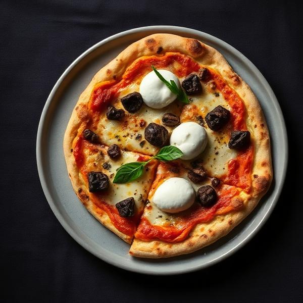
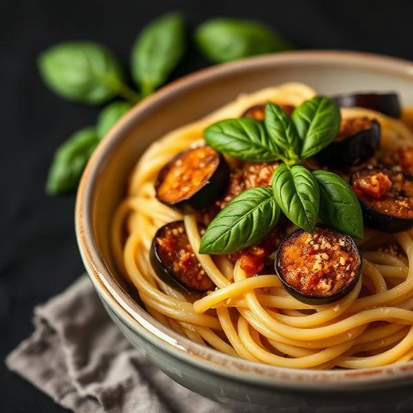
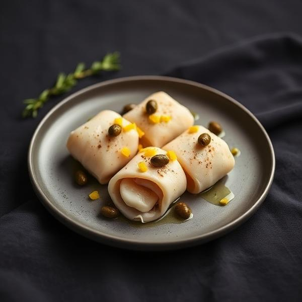

Pizza Tartufo e Burrata
185 kr.Trøffelcreme, fior di latte, frisk burrata og sort trøffel-carpaccio.


Acqua Blu er drevet af to sicilianske brødre, der bragte deres families opskrifter med fra det solbeskinnede Sicilien til den barske vestjyske kyst. Hver ret er en hyldest til vores rødder — tilberedt med lokale råvarer fra Vadehavet og importerede specialiteter fra vores hjemø.
„La qualità è un ingrediente che non ha sostituti."

Trøffelcreme, fior di latte, frisk burrata og sort trøffel-carpaccio.

Håndlavet pasta, siciliansk aubergine, San Marzano-tomater og saltet ricotta.

Tynde skiver af sværdfisk rullet med kapers, pinjekerner og sicilianske citrusfrugter.


Man — Tors16 — 21
Fre — Søn12 — 22
Blåvandvej 34
6857 Blåvand, Danmark